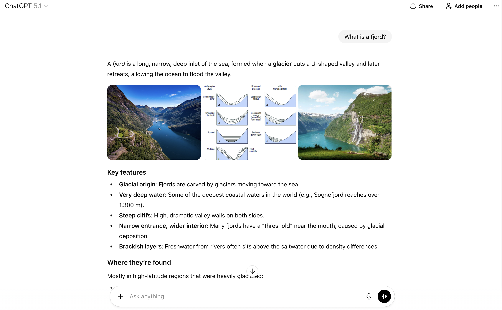

<!DOCTYPE html>
<html>
  <head>
    <title>My experiment</title>
    <!-- jQuery -->
    <script src="https://ajax.googleapis.com/ajax/libs/jquery/3.5.1/jquery.min.js"></script>
    <!-- Proliferate -->
    <script src="https://proliferate.alps.science/static/js/proliferate.js" type="text/javascript"></script>

    <script src="https://unpkg.com/jspsych@7.3.4"></script>
    <script src="https://unpkg.com/@jspsych/plugin-html-keyboard-response@1.1.3"></script>
    <script src="https://unpkg.com/@jspsych/plugin-html-button-response@1.1.3"></script>
    <script src="https://unpkg.com/@jspsych/plugin-image-keyboard-response@1.1.3"></script>
    <script src="jspsych/plugin-fullscreen.js"></script>
    <script src="https://unpkg.com/@jspsych/plugin-preload@1.1.3"></script>
    <script src="jspsych/plugin-survey-text.js"></script>

    <link href="https://unpkg.com/jspsych@7.3.4/css/jspsych.css" rel="stylesheet" type="text/css" />
    <style>
      body {
        margin: 0;
        padding: 0;
      }
    </style>
  </head>
  <body></body>
  <script>
    //trials
    var statements = [
    "A week has seven days.",
      "After exercise, muscle lactate levels often return close to normal within about an hour.",
      "Every valid email address contains the '@' symbol.",
      "Ancient Greek and Roman sculptures were originally painted in colors.",
      "Antibiotics can help the body recover from most viral infections.",
      "Being logged into a service in one tab can affect what you see on other websites in the same browser.",
      "Black holes have the same gravitational effects as any other equal mass in their place.",
      "Caesar salad is widely credited to a person named Caesar Cardini.",
      "Camels keep a supply of water in their humps to survive long trips without drinking.",
      "Closing an app on your phone always stops it from using the internet.",
      "Coral reefs are common across the Arctic and Southern Ocean waters.",
      "During summer, daylight generally increases as the weeks go by.",
      "During the Middle Ages, most major European cities had clean and reliable drinking water.",
      "End-to-end encryption means that only the sender and the receiver can access the content being transmitted.",
      "Everyone in the world speaks the same language.",
      "From night to night, the Moon's overall shape usually looks about the same.",
      "From one night to the next, constellations usually appear in the same place in the sky.",
      "Hippos produce skin secretions that can appear reddish.",
      "Humans can breathe underwater without equipment.",
      "Humans lived at the same time as woolly mammoths and some sabre-toothed cats.",
      "Humans possess more than five sensory modalities.",
      "If you are cold, drinking alcohol helps your body stay warm.",
      "In cold weather, when the rest of the body is well covered, most heat loss occurs through the head.",
      "In the past, most wars were fought mainly at sea rather than on land.",
      "Lightning can strike the same place more than once.",
      "Many ancient civilizations developed in cold, mountainous regions.",
      "Many of the hottest places on Earth are in dry subtropical areas.",
      "Most of the oxygen in the air comes from forests rather than the ocean.",
      "Most of the Sahara is rocky, not sandy.",
      "On the same calendar day, people in different countries can see different Moon phases.",
      "Over the course of a day, the tip of a shadow tends to move mainly from west to east.",
      "Private browsing prevents websites from tracking what you do online.",
      "Regularly cracking your knuckles can increase your risk of arthritis later in life.",
      "Schizophrenia can include hallucinations, delusions, and disorganized thinking.",
      "Seasons are mainly caused by the tilt of the Earth.",
      "The Coca-Cola bottle's contour shape was designed by a company called the Root Glass Company.",
      "The coldest places on Earth are always found in the Northern Hemisphere.",
      "The far side of the Moon receives about as much sunlight as the near side.",
      "The heart pumps blood through the body.",
      "The human brain continues to undergo structural changes throughout life.",
      "The Moon produces its own light.",
      "The phases of the Moon are caused by shadows falling across the Moon’s surface.",
      "The printing press was first developed in the 1600s.",
      "The Roman Empire collapsed mainly because of a major natural disaster.",
      "The Roman Empire expanded mostly because it avoided military conflict.",
      "The surface of the Sun is without visible features.",
      "Touching a baby bird will usually make its parents abandon it.",
      "Turning off 'location' for one app does not automatically stop other apps from accessing your location.",
      "Umami functions as a primary human taste.",
      "Using a VPN makes your online activity completely anonymous.",
      "Water freezes at 0 degrees Celsius under normal conditions.",
      "When threatened, ostriches often hide by sticking their heads in the sand."
    ];

    // 
    var n_trials = statements.length;

    /* initialize jsPsych */
    var jsPsych = initJsPsych({
      show_progress_bar: true,
      auto_update_progress_bar: false,
      on_finish: function(data) {
        var vals = data.values();
        if (vals.length > n_trials) {
          proliferate.submit({ "trials": data.values() });
        }
      }
    });

    /* create timeline */
    var timeline = [];

    // welcome
    var instructions = {
      type: jsPsychHtmlButtonResponse,
      stimulus:
      '<div style="text-align:left; width:700px; margin:auto; line-height:1.6;">' +

        '<p>Welcome to the second part of the study!</p>' +

        '<p>In this task, you will read a series of short statements about everyday facts, practical knowledge, or general information. Each statement will be accompanied by two answers:</p>' +
        '<ul>' +
        '<li>one from an <strong>generative AI</strong></li>' +
        '<li>one from a <strong>human participant</strong></li>' +
        '</ul>' +

        '<p>The <strong>generative AI answer</strong> comes from a <strong>randomly selected generative AI </strong>. </p>'+
        '<p> The <strong>human answer</strong> comes from a <strong>randomly selected participant</strong> who previously completed the same evaluation task.</p>' +
        '<p>The statements in this task were selected from a previous study, where the generative AI and the human participant gave contradictory answers in each case.</p>'+

        '<p>Your task is to evaluate the information presented.</p>' +

        '<p>For every statement, you will provide <strong>two</strong> responses:</p>' +
        // '<p><strong>1. Source endorsement</strong>: Which answer do you agree with?(generative AI / Human)</p>' +
        // '<p><strong>2. Confidence</strong>: How confident are you in your choice? (0-100 slider)</p>' +
        '<p><strong>1.</strong> For each statement, who do you agree with? (generative AI / human)</p>'+
        '<p><strong>2.</strong> How confident are you in your choice? (0-100)</p>'+

        '<p><strong>Please note:</strong></p>' +
        '<ul>' +
          // '<li>You will have up to <strong>30 minutes</strong> to complete the task. After that, the task will end automatically.</li>' +
            '<li>Please rely on your own knowledge and intuition.</li>' +
            '<li>Please do not use any external resources (e.g. Google or other online search engines) to look for answers during the experiment.</li>' +
            '<li>You will be compensated for your time regardless of correctness.</li>' +
          '</ul>' +
          '<p>Please read each statement carefully and answer as accurately as you can.</p>' +
        '<p>Click <strong>Next</strong> to begin.</p>' +

        '</div>',

      choices: ['Next'],
      button_html: '<button class="jspsych-btn" style="margin-top: 20px;">%choice%</button>'
    };
    timeline.push(instructions);

     // add AI description
     var ai_intro = {
      type: jsPsychHtmlButtonResponse,
      stimulus:
        '<div style="text-align:left; width:700px; margin:auto; line-height:1.6;">' +

          // '<p>Before the task begins, we would like to briefly introduce some common AI systems, as these will be mentioned later in the study.</p>' +

          // '<p>AI systems are now integrated into many everyday tools. For example, when searching on Google, the first result may appear as an <strong>"AI Overview"</strong>--an automatically generated answer produced by an AI system (such as Google\'s Gemini). An example is shown in Figure 1 below.</p>' +

          
          // '' +
          // '<p><em>Figure 1. Example of an AI Overview in Google Search.</em></p>' +

          // '<p>AI systems are also used in conversational tools such as <strong>ChatGPT</strong>, <strong>Gemini</strong>, <strong>Claude</strong>, and <strong>Microsoft Copilot</strong>, along with many similar services often referred to as "generative AIs". These tools can generate answers, explanations, and suggestions across a wide range of everyday topics.</p>' +

          // '<p>This brief introduction is only meant to familiarize you with the types of systems referred to as "generative AIs" in this study. </p>' +


          // '<p>Click <strong>Next</strong> to continue.</p>' +
          '<p>Before the task begins, we would like to briefly introduce some common AI systems, as these will be mentioned later in the study.</p>'+

          "<p>AI systems are now integrated into many everyday tools. For example, when searching for information or asking a question online, services may provide an <strong>AI-generated answer</strong> produced by systems such as <strong>OpenAI's GPT</strong> models. An example is shown in Figure 1 below.</p>"+

          ''+
          '<p><em>Figure 1. Example of an AI-generated answer using a GPT model.</em></p>'+

          '<p>Some other widely used examples include <strong>Gemini</strong>, <strong>Claude</strong>, and <strong>Microsoft Copilot</strong>. These systems can generate answers, explanations, and suggestions across a wide range of everyday topics. When searching on Google, you may also see an "AI Overview"-a type of AI-generated answer that similarly draws on such models.</p>'+


          '<p>This brief introduction is only meant to familiarize you with the types of systems referred to as <strong>"generative AIs"</strong> in this study.</p>'+

          '<p>Click <strong>Next</strong> to continue.</p>'+


        '</div>',
      choices: ['Next'],
      button_html: '<button class="jspsych-btn" style="margin-top: 20px;">%choice%</button>'
    };
    timeline.push(ai_intro);

    // fullscreen
    var enter_fullscreen = {
      type: jsPsychFullscreen,
      fullscreen_mode: true
    };
    timeline.push(enter_fullscreen);

    // shuffle 
    function shuffle(array) {
      for (let i = array.length - 1; i > 0; i--) {
        const j = Math.floor(Math.random() * (i + 1));
        [array[i], array[j]] = [array[j], array[i]];
      }
      return array;
    }

    // randomnize
    statements = shuffle(statements);

    
    var currentTruth = null;
    var currentConfidence = null;

 // trial: source choice + confidence slider
function createTruthConfTrial(statement, index) {
  return {
    type: jsPsychHtmlButtonResponse,
    stimulus:
      // strong
      '<p style="font-size:20px; margin-bottom:20px;"><strong>' + statement + '</strong></p>' +

      // '<p>Answer from an generative AI</strong>: <strong>False</strong>.</p>' +
      // '<p>Answer from a participant</strong>: <strong>True</strong>.</p>' +
      '<p>1. Who do you agree with?</p>' +

      '<div style="display:flex; justify-content:center; gap:40px; margin:25px 0;">' +

        '<button class="choice-btn" data-value="chatbot" ' +
        'style="width:220px; padding:14px 0; font-size:16px; border:2px solid #ccc; border-radius:10px; background:white; cursor:pointer;">' +
        'Generative AI: False</button>' +

        '<button class="choice-btn" data-value="human" ' +
        'style="width:220px; padding:14px 0; font-size:16px; border:2px solid #ccc; border-radius:10px; background:white; cursor:pointer;">' +
        'Human: True</button>' +

      '</div>' +

      
      // '<label><input type="radio" name="source_choice" value="chatbot"> generative AI</label>&nbsp;&nbsp;' +
      // '<label><input type="radio" name="source_choice" value="human"> Human</label></p>' +

      // Q2：confidence
      // '<p style="margin-top:20px;">2. How confident are you in your choice?</p>' +
      // '<div style="width:400px; margin:auto; position:relative;">' +
        '<div id="q2" style="visibility:hidden; margin-top:20px; min-height:120px;">' +

        '<p>2. How confident are you in your choice?</p>' +
        '<div style="width:400px; margin:auto; position:relative;">' +
          '<input type="range" id="conf-slider" min="0" max="100" value="0" step="1" style="width:100%;">' +
          '<span id="conf-value" style="position:absolute; right:-35px; top:0px; font-size:16px;">0</span>' +
          '<div style="width:100%; display:flex; justify-content:space-between; margin-top:5px;padding-left:15px;">' +
            '<span>0</span><span>50</span><span>100</span>' +
          '</div>' +
        '</div>' +

       
      '</div>',

    choices: ['Next'],
    // move Next button
    button_html: '<button class="jspsych-btn" style="margin-top: 40px;">%choice%</button>',

    data: {
      trial_type: 'truth_confidence',
      statement_index: index,
      statement: statement
    },

//     on_load: function () {
//       var display = jsPsych.getDisplayElement();
//       var slider = display.querySelector('#conf-slider');
//       var valueSpan = display.querySelector('#conf-value');

//       var radios = display.querySelectorAll('input[name="source_choice"]');
//       var buttons = display.querySelectorAll('.choice-btn');

//       var nextButton = display.querySelector('button.jspsych-btn');
//       nextButton.disabled = true;

//       var sliderMoved = false;   
//       var sourceChosen = false;  

//       currentTruth = null;
//       currentConfidence = slider.value;

//       valueSpan.textContent = slider.value;

//       slider.addEventListener('input', function () {
//         sliderMoved = true;
//         currentConfidence = slider.value;
//         valueSpan.textContent = slider.value;

//         if (sliderMoved && sourceChosen) nextButton.disabled = false;
//       });

//       radios.forEach(function (r) {
//         r.addEventListener('change', function () {
//           sourceChosen = true;
//           currentTruth = this.value;

//           if (sliderMoved && sourceChosen) nextButton.disabled = false;
//         });
//       });
//     },

//     on_finish: function (data) {
//       data.truth = currentTruth;
//       data.confidence = currentConfidence;

//       var curr = jsPsych.getProgressBarCompleted();
//       jsPsych.setProgressBar(curr + (1 / n_trials));
//     }
//   };
// }
on_load: function () {
  var display = jsPsych.getDisplayElement();
  var q2 = display.querySelector('#q2');
  var slider = display.querySelector('#conf-slider');
  var valueSpan = display.querySelector('#conf-value');

  var buttons = display.querySelectorAll('.choice-btn');

  var nextButton = display.querySelector('button.jspsych-btn');
  nextButton.disabled = true;

  var sliderMoved = false;
  var sourceChosen = false;

  currentTruth = null;
  currentConfidence = slider.value;

  valueSpan.textContent = slider.value;

  // slider 
  slider.addEventListener('input', function () {
    sliderMoved = true;
    currentConfidence = slider.value;
    valueSpan.textContent = slider.value;

    if (sliderMoved && sourceChosen) nextButton.disabled = false;
  });

  // button
  buttons.forEach(function (btn) {
    
    btn.addEventListener('click', function () {
      q2.style.visibility = 'visible';
      sourceChosen = true;
      currentTruth = this.getAttribute('data-value');

      // clear highlight
      buttons.forEach(b => {
        b.style.border = '2px solid #ccc';
        b.style.background = 'white';
      });

      // highlight
      this.style.border = '2px solid #007bff';
      this.style.background = '#e6f0ff';

      if (sliderMoved && sourceChosen) nextButton.disabled = false;
    });
  });
},

on_finish: function (data) {
  data.truth = currentTruth;
  data.confidence = currentConfidence;

  var curr = jsPsych.getProgressBarCompleted();
  jsPsych.setProgressBar(curr + (1 / n_trials));
}
  }
};


    // trial
    statements.forEach(function(stmt, idx) {
      timeline.push(createTruthConfTrial(stmt, idx));
    });

    // feedback
    var survey = {
      type: jsPsychSurveyText,
      questions: [
        {
          prompt:
            'If you encountered any technical difficulties, found anything odd, or if you have any other comments about the experiment that you would like to share with us, please type them in the box below:',
          rows: 5
        }
      ]
    };
    timeline.push(survey);

    // finish
    var end_of_experiment = {
      type: jsPsychHtmlKeyboardResponse,
      stimulus:
        '<p>Thanks for your participation. This is the end of the experiment.<br>' +
        'Please press the space bar to exit.</p>',
      trial_duration: null,
      choices: [' ']
    };
    timeline.push(end_of_experiment);

    // exit fullscreen
    var exit_fullscreen = {
      type: jsPsychFullscreen,
      fullscreen_mode: false
    };
    timeline.push(exit_fullscreen);

    // start
    jsPsych.run(timeline);
  </script>
</html>
